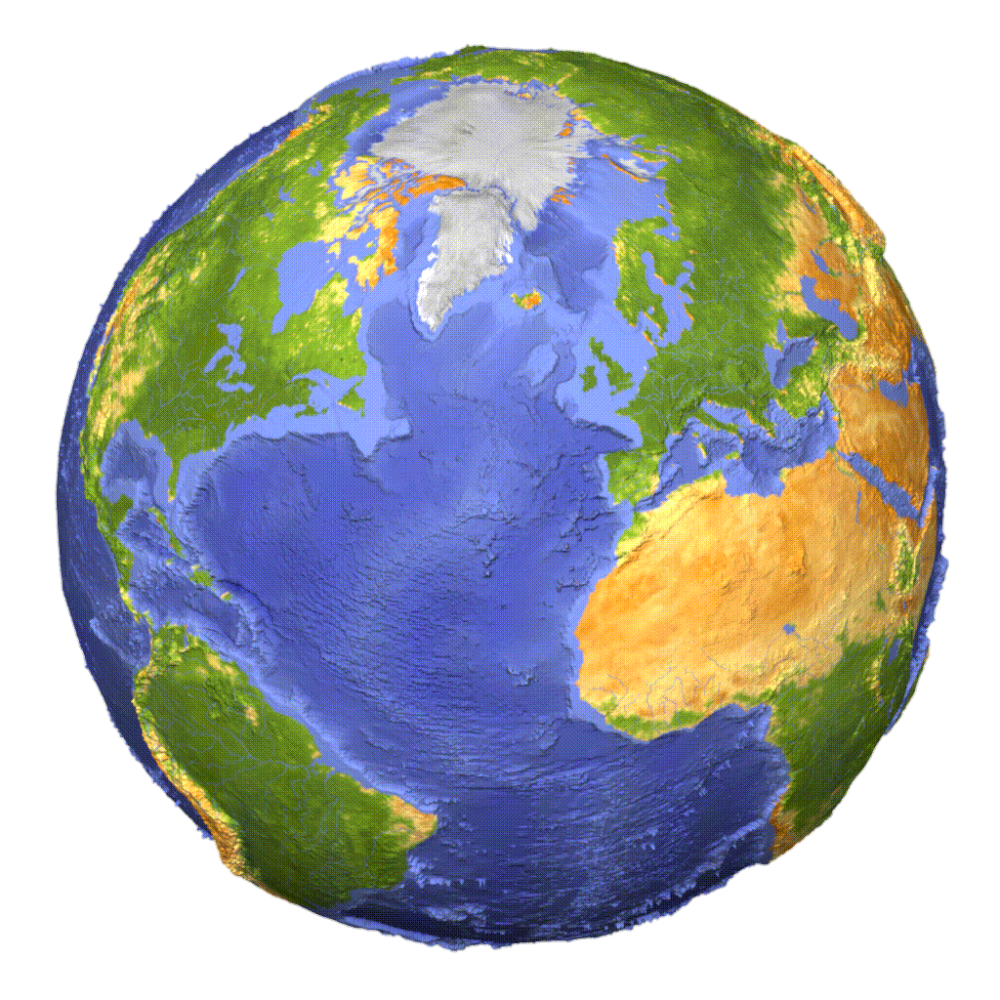
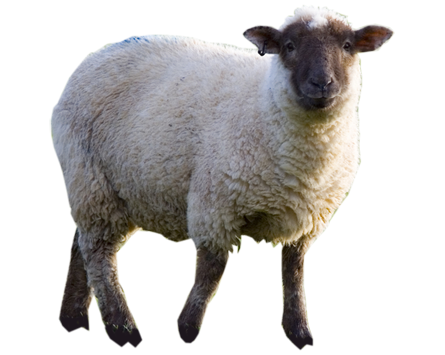
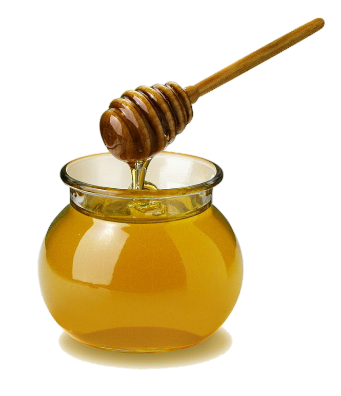

أ 🌻 ب 🌻 ج 🌻 د
نصيحة ❗ اضغطوا على الأزرار الموضحة لسماع نطق الكلمة

الأرض 
الخروف 
الجناح
لاحظ الحركات على حرف الألف في أول الكلمة 🐣 أي الحركتين تصدر صوتاً يشبه الكسرة ؟
ضع الحرف المفقود في بداية الكلمة ليصبح معناها "الخروف"
ܡܪܳܐو الآن إلى حرف الـ 'بِيْث'
انتبهوا إلى لفظه في بداية الكلمات التالية 🥰🌻
البومة
الابنة
الابن
لاحظوا الحركات على حرف البِيْث و أجيبوا عن التالي 🌼
أي الحركتين التاليتين تعطيان صوت الياء ؟
هل لاحظتم ؟ في كلمتي ܐܰܪܢܒ݂ܳܐ و ܐܶܒ݂ܪܳܐ لفظنا البِيْث مثل حرف ال V الإنكليزي و كان أسفله نقطة تميز لفظه هذا ، و لكن في الأمثلة الأخرى لفظناه مثل الباء العربية ، هناك 6 حروف أخرى لها لفظان هي ال ܒ ܓ ܕ ܟ ܦ ܬ (ب ج د ك ف ت) و سنمر عليها لاحقاً
و الآن إلى الحرف التالي ، حرف الجيم (الچُمَل)
لاحظوا نطق حرف الچُمَل في بداية الكلمات التالية :
الجب
الجزاز
لاحظوا الحركات على الكلمات السابقة و أجيبوا عن الآتي 🌸
ما هي الحركة التي تعطي صوتاً يشبه الواو ؟
و أخيراً لهذا الدرس 🥳 حرف الدال (الدُلَذ) لاحظوا نطق حرف الدُلَذ في بداية الكلمات التالية 🌼
القاضي
الدلو
العسل 
أحسنتم 😍🥰 أنا فخور بكم جداً!
و الآن فرصة مناسبة جداً لتلخيص بعض نقاط الدرس
اضغطوا على الأزرار التالية لسماع أسماء الحركات و كيفية نطقها 🥰
و أخيراً مع الأسئلة ، أجيبوا عن هذه الأسئلة عن الكلمات التي وردت في الدرس ، و تذكروا أن تسجلوا كل الكلمة الجديدة التي تمر معكم على دفتر خاص
ماذا يصنع النحل ؟
ماذا تعني كلمة البئر في السريانية ؟
ماذا نسمي البئر العميق ؟
و بماذا نجلب الماء منه ؟
ما اسم هذا الحيوان ؟